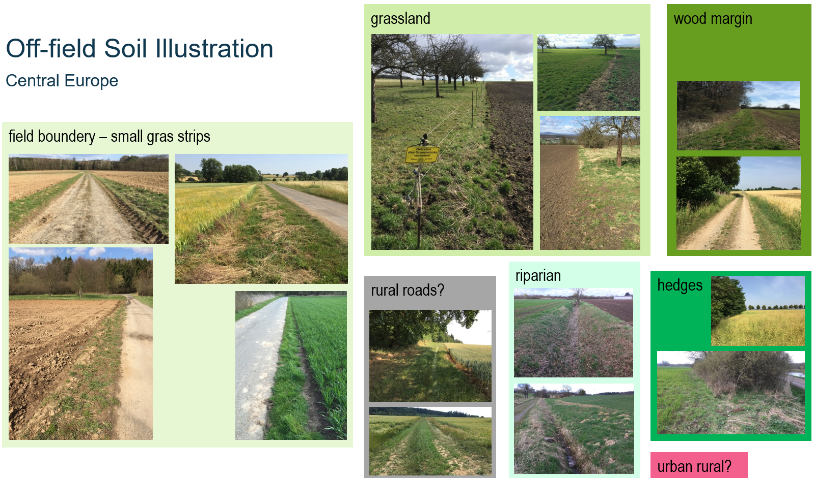

Scenarios (under preparation)
Introduction
The local co-occurrence of arable fields and off-field areas (eg, field margins, hedges, riparian zones, wood margins, grasslands), their slopes, structure and management, together with environmental conditions, are key drivers of potential pesticide exposure and risk of off-field-soil organisms. A technical representation of certain geographic area (or artificial composition) covering these driving factors is what we call a scenario.
In regulatory RA, scenarios are selected and designed to represent a certain protection level for the entirety of conditions in a given regulatory unit (eg, a country). Conservative scenario conditions for the risk of non-target-organismsm are protective for a large fraction of populations (typically >90%) and are basically used at lower-tier RA levels. Using realistic landscape-level scenarios allows to obtain insights on real-world risk drivers and to define adpated risk mitigation and management measures. This is further improved when using a variety of realistic landscape-level scenarios.
Off-Field Soil Areas
Formally, the off-field areas starts at the property boundery of the field (see scheme in Background).
However, as this basically can be anything and as the idea of the forthcoming pesticide regulation of the European Food Safety Authority (EFSA) (“addressing the state of the science on RA of PPPs for in-soil organisms” (EFSA PPR Panel, 2017)) is to protect soil organisms, off-field soil habitats need to be identified which are relevant subjects to off-field soil RA.
In real-world cultivated regions often arable fields directly border to each other or to rural roads (with artificial road substructure banks and no natural soil). So in scenario development a first step is analyse cultivated regions for (semi)natural off-field soil land cover types, from which scenarios are being build.
The development and definition of relevant off-field soil habitats is part of the discussions in the regulatory scientific community.

Illustration of potential off-field soil areas in cultural landscapes in central Europe (images: Thorsten Schad).
Example main land use/cover types that represent off-field areas in cultivated landscapes. In general, it needs to be considered that the visible cultivation zones (eg, ploughed area, growing cereals) not necessarily coincide with the actual field boundary, due to field management requirements, ie, part of a visible margin often belongs to the field for which in-field protection goals apply (different from off-field ones). Also, other situations might need discussion in the regulatory scientific community, eg, if grasslands directly bordering to an arable field belonging to the same farmer.
| Land use/cover | Description | Discussion |
|---|---|---|
| Field margin | Small margin often bordering to (rural) roads. | Immediate margin to rural roads often of construction material (fundament), ie, do hardly represent natural soil. Land cover often (semi-) natural herbaceous vegetation or hedges. For hedges, care need to be taken as farmers might accept (promote) hedges at their in-field margins, ie, the hedge occurs on the property of the farmer. |
| Riparian | Riparian zone of ditches, streams, rivers, ponds, etc. | Typically, covered by herbaceous riparian vegetation, hedges or trees. |
| Natural | Natural areas, eg, nature protection areas. | Typically, of natural vegetation and soil conditions. |
| Wood margin | Woods and forests directly bordering to (arable) fields. | Typically, managed forests of cultivated trees, with (semi-) natural herbaceous vegetation, hedges and soil conditions. |
| Grasslands | Managed grasslands, eg, meadows, pastures, orchard meadows. | Typically, of managed vegetation and soil conditions, eg, as developing from managed (sown) grass types and fertilisation. |
| Urban | Urban areas directly bordering to (arable) fields. | Eg, gardens, ruderal areas, industrial zones. Soil conditions can be (semi-) natural or artificial. Thus, urban LULC types were not included in the example scenarios. |
Example Scenarios
Publication (Open Access)
Example scenarios introduced in the publication to the xSR model in IEAM: A spatiotemporally explicit modeling approach for more realistic exposure and risk assessment of off-field soil organisms are also open access and available at Github:
- xxx
- xxx NRW1
Schematic Scenarios
different purposes
- represent a single edge-of-field situation
- learning
Schematic scenario 1 - 'Grassland' type.

Schematic scenario 2 - 'Riparian' type.
- 'Grassland'-type
large off-field area; yet, also margins of large areas mostly direct vicinity to arable fields single field as exposure source representing, eg, grassland, wood, urban; wood-margin, urban-margin - 'Riparian'-type bordering to 2 fields representing, eg, ditch/stream riparian zone, off-field hedge
Ensemble of schematic scenarios representing a statistical population of off-field-soil areas.
Landscape Scenarios
Example landscape scenarios were choosen for
NRW1
NRW2

NRW3